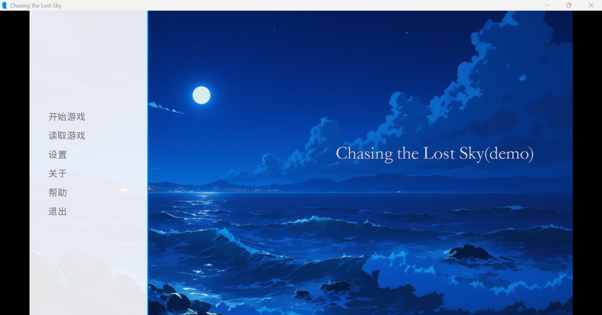
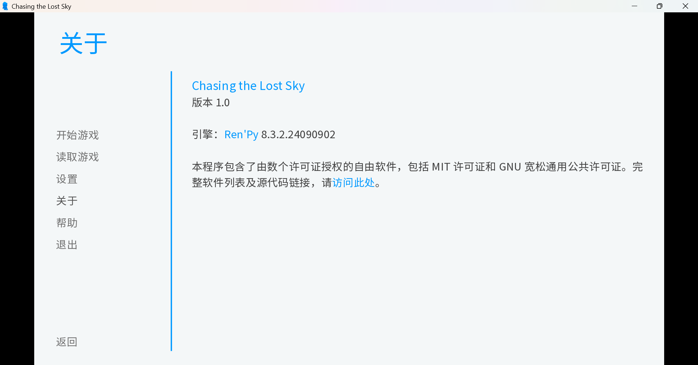
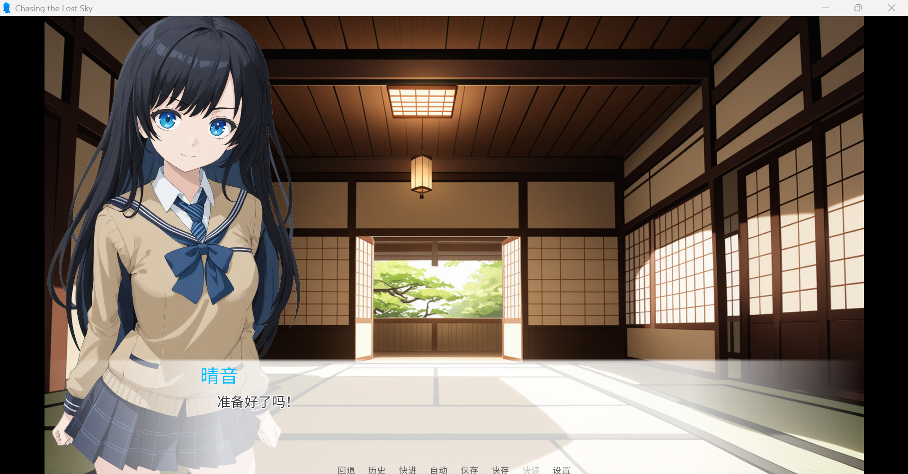
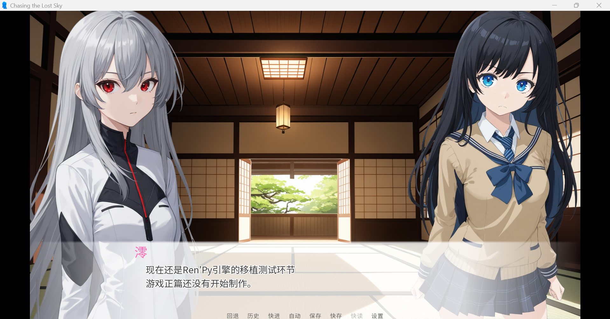
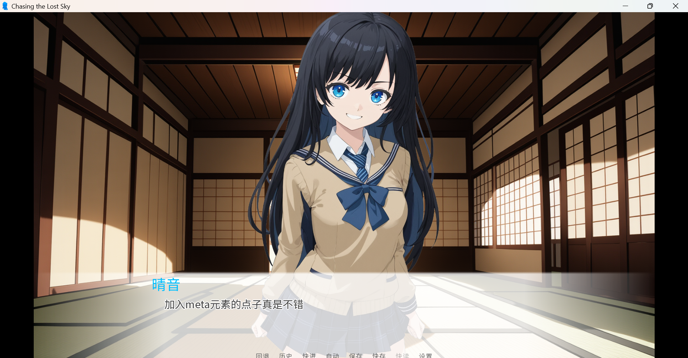
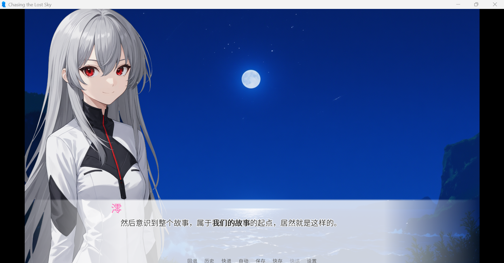

时间：2024年10月5日9：20
标题：玩了下朋友的galgame的demo
前几天看到了结弦发了一下galgame的demo，本来当时10月1、2号就发的，但是因为GitHub page构建hexo的问题，所以现在来写。
该galgame用的是Ren'py
比如某文学部就是用该引擎做出来的
接下来是一些demo里面的展示图片
这个是界面，名字是Chasing the Lost Sky


游戏画面，还添加进了meta元游戏的元素




我还是挺其弟啊这个游戏的，不过做一款galgame所耗费的时间是不小的，虽然现在demo是5分钟流程
但是还需要打磨剧本、音乐、立绘等
程序和剧本这两个倒还好，但音乐和立绘这些虽然目前可以用ai完成，但也需要努力一番。
或许日后时间充裕了感兴趣了我也是可以试着用该引擎来制作一个小流程游戏。
点击返回文章列表